City University of Hong Kong
Frontier of Artificial Networks (FAN) Group
Department of Data Science · College of Computing
I am currently a Postdoctoral Fellow at the Department of Data Science, City University of Hong Kong (CityU). Prior to this, I was a Postdoctoral Fellow at The Chinese University of Hong Kong (CUHK). I obtained my Ph.D. from Nanjing University of Aeronautics and Astronautics (NUAA). My research spans computer vision, deep learning, and AI, with a particular focus on Geometric Deep Learning. My current work investigates novel designs of invariant representations — from global to local and hierarchical assumptions. Research published in ACM Computing Surveys, IEEE Transactions on Pattern Analysis and Machine Intelligence, IEEE Transactions on Image Processing, ICCV, and USENIX Security.
News
Recent UpdatesSelected Publications
Full list on Google Scholar →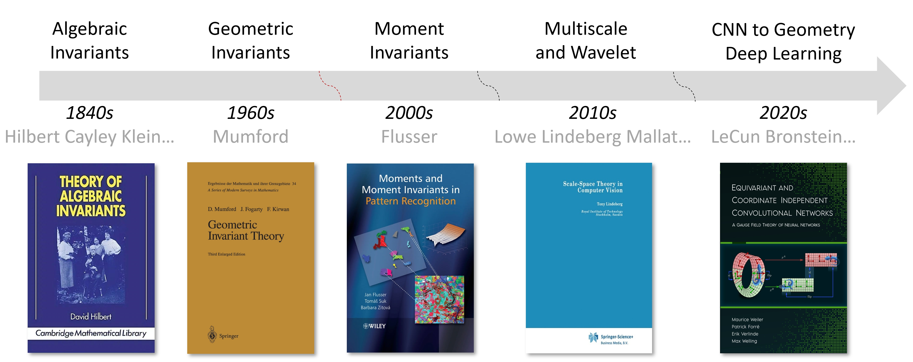
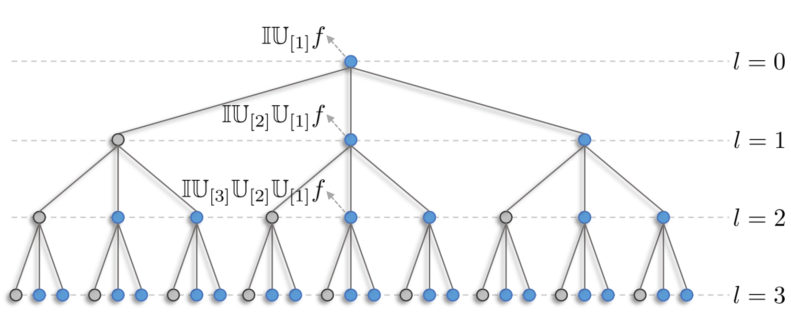
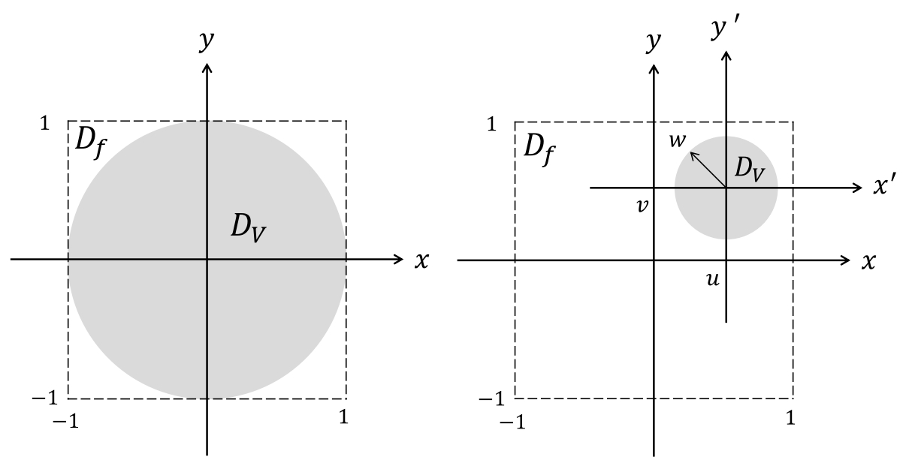
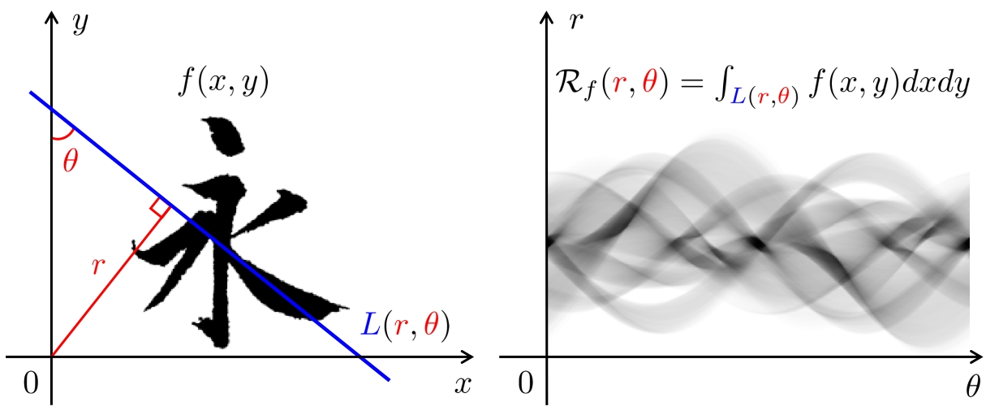
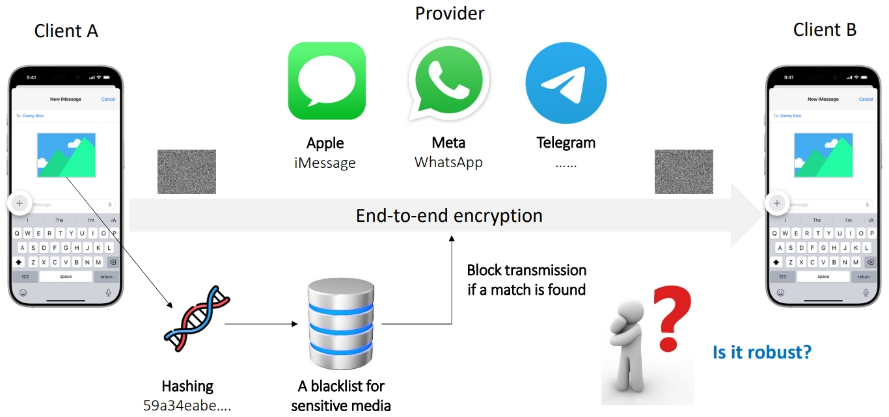
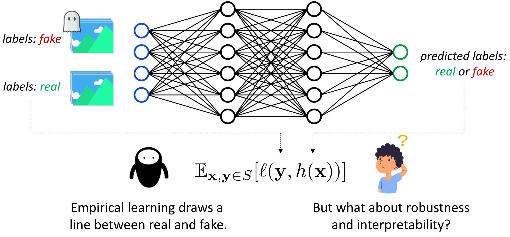
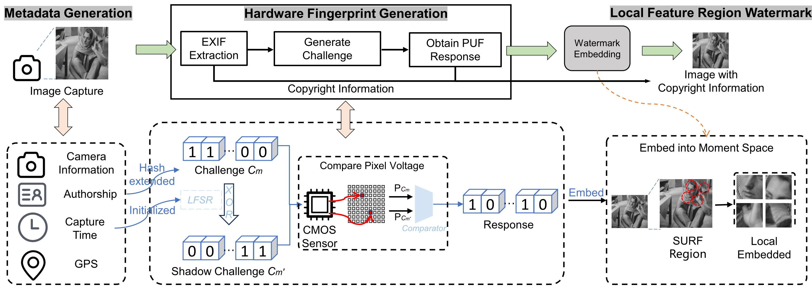
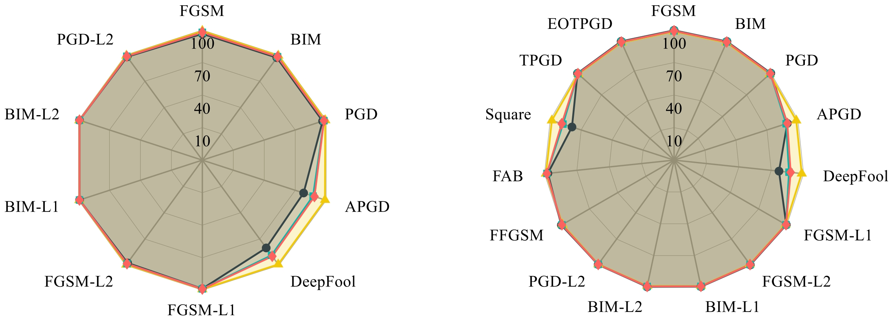
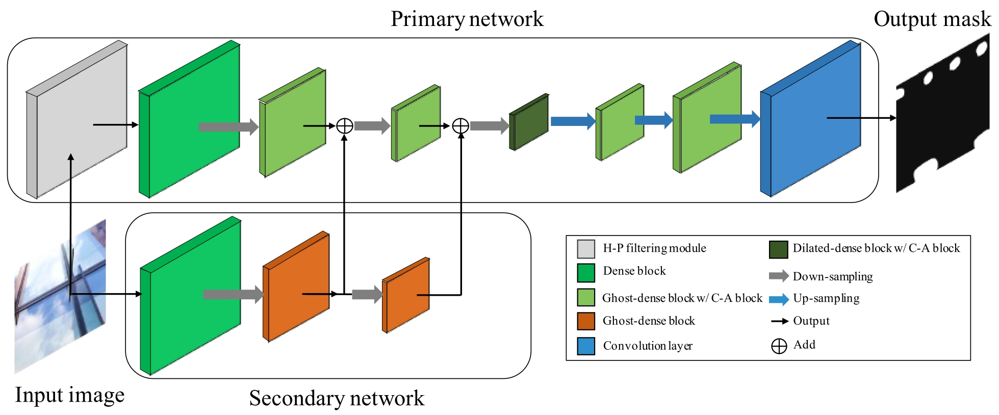
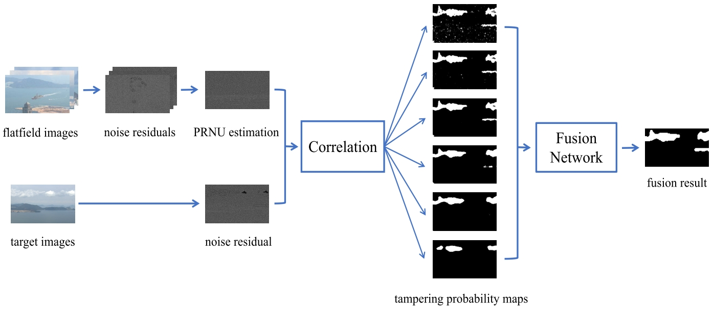
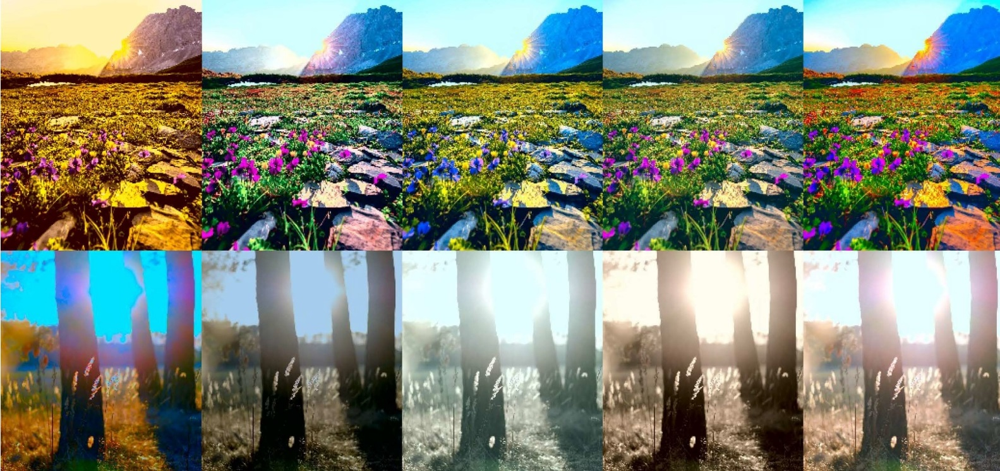
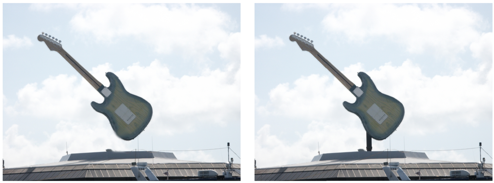
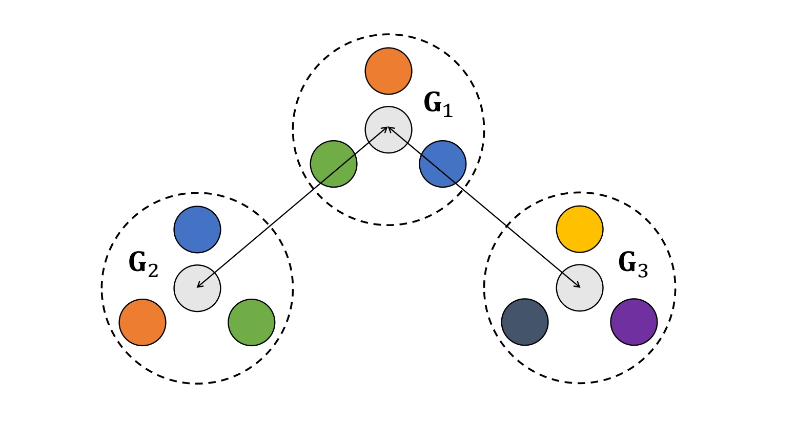
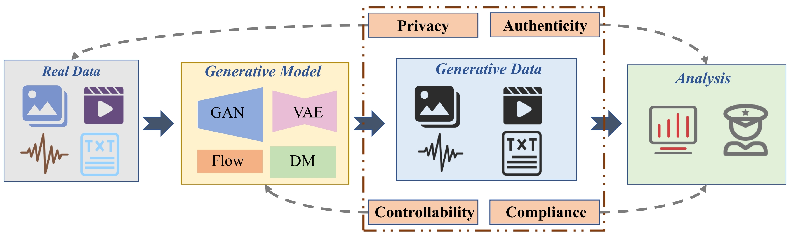